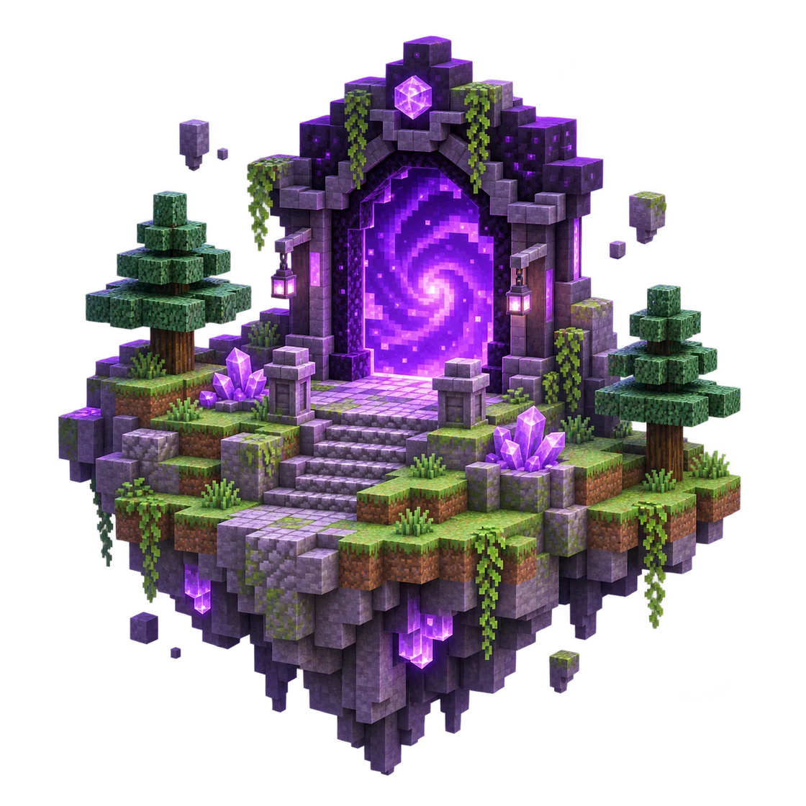

Tu servidor.
Tus reglas.
Código a medida.
Dale forma a tu próxima idea en Minecraft Java. Plugins, configuración e integraciones para que tu servidor tenga personalidad propia.

onPlayerJoin(player) {
welcomeToYourWorld();
}UN ECOSISTEMA QUE CONOZCO
DEL SERVIDOR AL PORTFOLIO
Ideas que toman forma.
VoidTime es mi proyecto propio y mi espacio de trabajo con mecánicas, plugins y contenido custom.
Experiencia basada en mi proyecto VoidTime. Imágenes creadas con IA como arte conceptual, no capturas del servidor.
EN QUÉ PUEDO AYUDARTE
Una idea. Muchas posibilidades.
Desde una configuración concreta hasta una pequeña mecánica hecha para tu comunidad.
Plugins a medida
Comandos, recompensas y pequeñas mecánicas personalizadas. Definimos las funciones antes de empezar.
Configuración e integración
Permisos, rangos, menús y economía. Conecto tus plugins para que formen parte de la misma experiencia.
Diagnóstico y correcciones
Revisión de errores de consola, conflictos y configuraciones. Primero identificamos el problema y después acordamos la solución.
Funciones, plazo y entregables acordados antes de comenzar.
Pedir presupuestoHOLA, SOY NMANBLAST
También estoy al otro lado de la consola.
Administro VoidTime, mi propio servidor de Minecraft. Trabajo con la configuración, las integraciones y las mecánicas que dan forma a su survival custom.
Esa experiencia me ayuda a entender tu idea desde el punto de vista de quien tiene que ponerla en marcha y mantenerla.
Tenerife, España · Trabajo en remotoASÍ TRABAJAMOS
Me cuentas tu idea
Versión, plugins y qué quieres conseguir. Revisamos qué necesitas.
Acordamos el encargo
Funciones concretas, presupuesto y plazo. Sin dejar el alcance en el aire.
Desarrollo y pruebas
Preparo la solución y comprobamos que cumple lo acordado.
Entrega y puesta en marcha
Recibes los archivos y las indicaciones necesarias para utilizarlos.
ANTES DE ESCRIBIRME
Algunas dudas habituales.
¿Cuánto cuesta un encargo?
Depende de las funciones, la versión y las integraciones. Cuéntame qué necesitas y te preparo un presupuesto con el alcance definido.
¿Puedes trabajar con mi servidor actual?
Sí, podemos revisar tu instalación actual. Necesitaré la versión y la lista de plugins para valorar compatibilidad y lo que requiere el trabajo.
¿Incluyes plugins de pago?
Las licencias de plugins y los recursos de terceros se acuerdan aparte. Si el trabajo los necesita, tendrás que disponer de las licencias correspondientes.
TU PRÓXIMO PROYECTO EMPIEZA AQUÍ
¿Qué vamos
a construir?
Hablemos por Discord. Añádeme como NmanBlast y cuéntame qué necesita tu servidor.